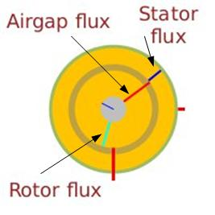

Wie angegebenGrundkonzepte, ein in LdP entwickeltes Simulator kann als elektrisches Diagramm dargestellt werden, in dem es unterschiedlicheBlöckedie angenommen werden, bestimmte Operationen (Teile des Simulators) durchzuführen, die einen Satz von Signalen empfangen und andere Signale erzeugen, die von anderen Blöcken angenommen werden.
Diese Blöcke werden durch "Verbindungen" miteinander verbunden, was physikalischen Kabeln in einer elektrischen Platte entspricht. Die folgende Abbildung verdeutlicht dieses Konzept.
Darüber hinaus verfügt LdP über Mechanismen, die es als "Testbank" oder "Workbench" funktionieren lassen. Die Idee besteht darin, die Bedingungen, unter denen der Simulator läuft, zu verändern und seine Reaktionen auf diese Veränderungen zu beobachten. Zu diesem Zweck wird angenommen, dass jeder Simulator die entsprechenden Synoptiken aufweist, die an die Simulationsanforderungen der zu simulierenden Ausrüstung oder Anlage angepasst sind. Hier einige Beispiele:
|
Hydraulisches Bremskreis Subsystem. |
|
Druckanzeige in einem Hydraulikkreislauf. |
 |
Magnetische Flussvektoranzeige in einer Induktionsmaschine. |
|
Stromwert einer Funktion mehrerer Parameter. |
|
Wert von zwei Signalen (mechanische und elektrische Leistung) auf einer Karte möglicher Betriebsbereiche. |
|
Betriebspunkt und zugehörige Steigung. |
Zusätzlich,LdP hatindicators/controlsgraphische Elemente zur Anzeige von Signalwerten und auchKraftdie Werte anderer Signale. Diese Indikatoren, die Entwicklern von LdP-kompatiblen Synoptics zur Verfügung stehen, wurden entwickelt, um den Bildschirmraum zu minimieren, der benötigt wird, um eine Benutzeroberfläche zu entwickeln, die sowohl umfassend als auch nicht überwältigend ist.
Diese LdP-Komponenten sind im folgenden Abschnitt beschrieben, und ihr Hauptmerkmal ist, dass sie sowohl verwendet werden können, um den Wert eines Signals anzuzeigen und diesen Wert manuell zu drücken.
Zusätzlich hat LdP "Aufzeichnungen" die Entwicklung von Veränderungen in bestimmten als signifikant ausgewählten Signalen sowie eineKontakt Editor(die das Konzept eines gebrochenen Kabels simulieren lässt) undParameter Editor, Kennwerte von Simulationseinheiten innerhalb des allgemeinen Simulators.